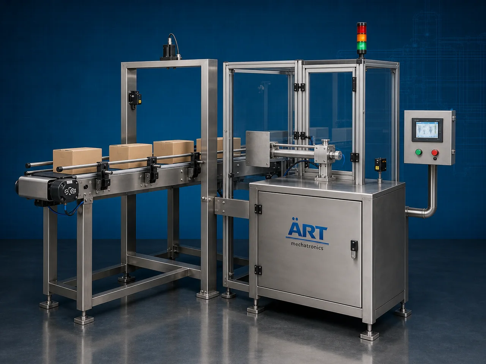

Auto Reject System for Packaging Process (Automatic Product Rejection System)
An Auto Reject System for Packaging Process, also known as an Automatic Product Rejection System, Packaging Reject Mechanism, Inline Reject System, or Industrial Packaging Rejection Unit, is an advanced industrial automation solution designed for automatic defective product rejection, quality…

About the Auto Reject System
Auto reject systems are widely used for: ✔ Defective product rejection ✔ Underweight and overweight rejection ✔ Metal contaminated product rejection ✔ Barcode and label rejection ✔ Missing cap or seal rejection ✔ Packaging defect removal ✔ Vision inspection reject operations ✔ Inline quality control automation
The system improves: ✔ Packaging quality assurance ✔ Product safety ✔ Production efficiency ✔ Packaging compliance ✔ Automation reliability ✔ Customer satisfaction ✔ Export quality standards
Industrial auto reject systems use: ✔ Pneumatic reject mechanisms ✔ Servo synchronized rejection systems ✔ PLC and HMI automation controls ✔ Sensor and inspection integration systems ✔ Conveyor synchronized handling systems
to automatically identify and reject defective products with superior accuracy and high production efficiency.
Auto reject systems are widely used in industries such as:
Food processing industries Beverage industries Pharmaceutical industries Chemical industries Cosmetic industries Packaging industries Electronics industries FMCG industries
where zero-defect production, automated quality control, and packaging compliance are essential.
The system is highly suitable for: ✔ Packaging line quality control ✔ Carton rejection systems ✔ Bottle and container rejection ✔ Defective product removal ✔ Inline inspection automation ✔ Industrial packaging verification systems
ART Mechatronics offers high-performance auto reject systems for packaging processes, engineered for continuous industrial operation, intelligent rejection accuracy, smooth product handling, and reliable long-term industrial automation.
Working Principle of Auto Reject System
- 1. Product Feeding & Conveyor Handling Products are automatically transferred through synchronized conveyor systems for inspection and rejection operations.
- 2. Product Inspection & Detection Process Machine automatically receives signals from inspection systems including checkweighers, metal detectors, vision inspection systems, barcode scanners, or leak detectors to identify defective products.
Intelligent synchronization ensures accurate defect identification and smooth product handling.
- 3. Product Inspection Operation Machine handles rejection for: ✔ Bottles ✔ Pouches ✔ Sachets ✔ Cartons ✔ Jars ✔ Containers ✔ Bags ✔ Industrial packaged products
accurately and continuously.
- 4. Automatic Product Rejection Process Machine performs: Defective product removal Underweight rejection Overweight rejection Contaminated product rejection Packaging defect rejection Missing product rejection Barcode verification rejection
for efficient and compliant industrial quality assurance.
- 5. Intelligent Automation & Integration Optional systems include: Vision inspection integration Metal detector integration Checkweigher integration Barcode verification systems Data logging and ERP integration
- 6. Approved Product Discharge Approved products continue automatically for: Secondary packaging Case packing Palletizing Warehouse storage Export shipment handling
Types of Auto Reject Systems
- 1. Pneumatic Push Reject System Designed for: ✔ High-speed lightweight packaging rejection applications
- 2. Air Blast Reject System Suitable for: ✔ Pouches, sachets, and lightweight packaging systems
- 3. Pusher Type Reject System Uses: ✔ Carton and rigid packaging rejection systems
- 4. Drop Flap Reject System Designed for: ✔ Conveyor-based packaging rejection operations
- 5. Robotic Reject System Suitable for: ✔ Intelligent automated product handling operations
- 6. Fully Automatic Integrated Reject System Designed for: ✔ Complete industrial quality control automation lines
Industries Using Auto Reject Systems
🍅 Food Processing Industry Snacks, spices, sauces, and food packaging quality control systems. 🥤 Beverage Industry Bottle inspection, cap verification, and beverage packaging rejection systems. 💊 Pharmaceutical Industry Medicine packaging, serialization, and healthcare quality inspection systems. ⚗️ Chemical Industry Industrial containers, chemical packaging, and compliance inspection systems. 🧴 Cosmetic & Personal Care Industry Perfume packaging, cosmetic containers, and retail packaging inspection systems. 🛒 FMCG Industry Consumer products and retail packaging quality assurance systems.
Features & Advantages
✔ High-speed automatic product rejection operation ✔ Accurate and intelligent defect detection integration ✔ Reliable defective product removal systems ✔ PLC and servo automation control systems ✔ Improves packaging quality and production efficiency ✔ Reduces manual inspection dependency ✔ Supports multiple product formats and packaging types ✔ Reliable long-term industrial performance ✔ Smooth integration with packaging automation lines
Technical Highlights
System Type: Auto reject system Industrial packaging reject mechanism Automatic product rejection unit Product Compatibility: Bottles Pouches Sachets Cartons Containers Bags Industrial packaged products Integration: Checkweigher systems Metal detector systems Vision inspection systems Barcode verification systems Features: PLC control system Servo synchronization Touchscreen HMI Sensor integration systems Data logging systems Applications: Packaging inspection Defective product rejection Industrial quality control Inline packaging automation Export packaging verification Automation: Semi-automatic Fully automatic industrial systems
Turnkey Auto Reject Solutions
ART Mechatronics offers: Complete packaging reject systems Automatic defective product removal solutions Packaging inspection integration systems Conveyor synchronization systems Installation & commissioning After-sales service & AMC
Why Choose Art Mechatronics
Expertise in industrial inspection and automation systems Customized rejection solutions for multiple industries High-performance and intelligent automation technology Advanced PLC and inspection integration systems Proven industrial quality assurance performance across sectors
Applications
Food Processing Plants Beverage Manufacturing Facilities Pharmaceutical Packaging Industries Chemical Processing Units Cosmetic Manufacturing Plants FMCG Packaging Industries
Related Automation & Robotics machines
Get pricing & specs for the Auto Reject System
Share the product, target capacity, current process and plant location. These details help our engineers discuss the right machine or line configuration.
One partner, from design to start-up
ART Mechatronics designs, manufactures, installs and commissions your Auto Reject System solution with regional presence in India, UAE and Thailand.